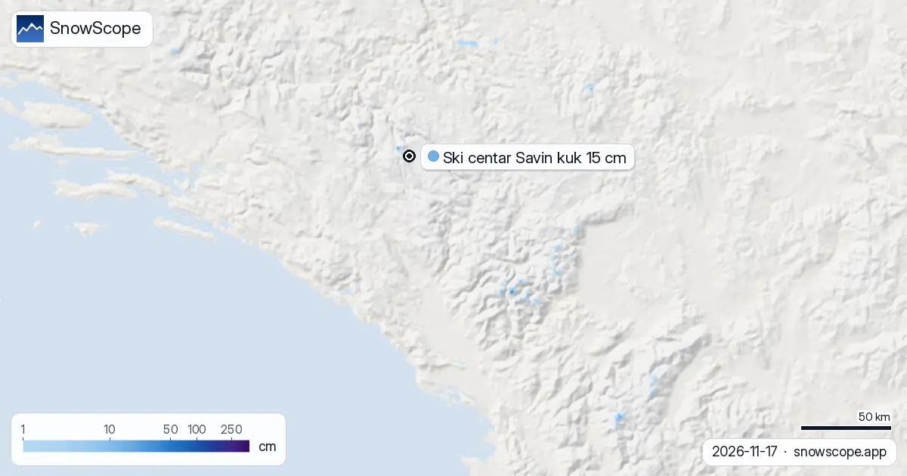
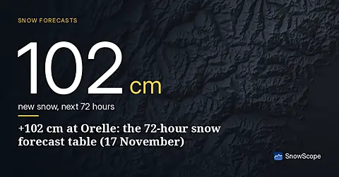

Is there snow in Montenegro? Snow depth and new snow on 17 November 2026
Montenegro's snow cover has shrunk to just 20 km² as of 17 November, down from 80 km² a day earlier. Only the highest peaks above 2,200 m hold snow, and just one resort has enough depth to ski. The next week brings hope: forecasts show up to 15 cm is possible, with the best snow falling on Monday 23 November.
See the live snow forecast for Ski centar Savin kuk in the SnowScope appSnow depth, powder alerts and the 3D map, free.
Where the snow is now
Snow lies only above about 2,200 m in Montenegro. Across the mapped region, white ground covers 20 km² today, compared with 280 km² seven days ago. The drop is sharp but typical for November: early-season snow often retreats quickly when weather warms.
Above 2,000 m, the average depth is just 1 cm, with snow on only 15 % of the terrain. Below that height, the country is mostly bare ground. This means low-lying ski areas and valley runs are closed or would be thin and rocky.
| Resort | Snow depth | New snow, 72 h | Coming, next days | Top |
|---|---|---|---|---|
| Ski centar Savin kuk | 15 cm | 10 cm | 5 cm | 2,175 m |

Recent weather and the past few days
The last 72 hours have been dry. No measurable snow fell across most of Montenegro in that period. However, two high mountain ranges did collect some flakes: the Prokletije range (above 2,400 m) gathered about 21 cm over three days, while Durmitor picked up roughly 12 cm. These are the only spots where conditions have improved.
The sharp loss of snow since yesterday (60 km² gone) suggests warmth and melt rather than a dry spell. Valley-level temperatures are well above freezing.
What one resort has right now
Ski centar Savin kuk, at the top of the country's resorts, holds 15 cm of snow today. It sits at about 2,175 m and has picked up 10 cm over the past three days. This is the only one of three resorts with snow deep enough to ski.
Even at this site, 15 cm leaves little margin. Rocks and thin patches are likely, so if the resort is open, stick to groomed runs.
What the next week holds
The outlook improves from Monday onwards. Between now and 24 November, up to 15 cm is forecast. In the next three days (to 20 November), only about 1 cm is expected, so conditions will not change much before the weekend.
Monday 23 November is the standout day: the forecast shows up to 9 cm could fall then, the most in any single day of the forecast period. After that, snow tapers off again. By the end of the week, Ski centar Savin kuk is predicted to gain about 5 cm by 20 November, then more on and after the 23rd.
Height matters now
Snow depth increases sharply with altitude. At 2,000–2,500 m, the average is 1 cm. Below 2,000 m, there is almost no snow on the ground. This means any skier must ride the highest lifts and avoid any lower terrain.
Once Monday's snow arrives, the picture will shift. If 9 cm does fall at the highest elevations, the snow line will drop and lower runs may become skiable. Until then, plan to stay above 2,100 m if you visit.
What to do before you go
Check Ski centar Savin kuk's own website for lift status and opening times. Early-season snow often covers rocks and stones. Stick to marked, groomed runs where the base is prepared and stones are known.
Wind can pack snow hard on exposed ridges and peaks, making it icy. Carry edges in good condition. The region's forecast is set to improve from Monday, so waiting until after the 23rd gives much better conditions.
Tips for skiers
- Visit Ski centar Savin kuk only if the resort confirms open lifts; at 15 cm, coverage is uneven and thin patches are certain.
- Ski groomed runs only. Rocks and stones lurk under early-season snow; off-piste is not safe until depth increases.
- Before 20 November, expect no change in conditions. Plan your trip for Monday 23 November or later to ski the new snow.
- Above 2,200 m, snow is firmer and may be wind-packed; test your edges carefully on ridges and exposed terrain.
- Bring a helmet and check the official avalanche bulletin if you venture off-piste after 23 November.
About these numbers
Resort snow depths are the deepest snow on the resort's upper slopes on the date shown; they are estimates for an area, not a measurement at one point. Forecasts can change. Always read the official avalanche bulletin before going off-piste.
Cite this report
For research, teaching or the press: the numbers and charts are free to reuse under CC BY 4.0 with this citation.
SnowScope (2026), Is there snow in Montenegro? Snow depth and new snow on 17 November 2026, https://snowscope.app/blog/en/2026/11/montenegro-snow-report-17-november-2026.html, accessed 2026-11-17
SnowScope (Atlas Labs). (2026, November 17). Is there snow in Montenegro? Snow depth and new snow on 17 November 2026. SnowScope snow reports. https://snowscope.app/blog/en/2026/11/montenegro-snow-report-17-november-2026.html
BibTeX
@misc{snowscope2026montenegrosnowreport17no,
author = {{SnowScope (Atlas Labs)}},
title = {Is there snow in Montenegro? Snow depth and new snow on 17 November 2026},
year = {2026},
month = nov,
howpublished = {\url{https://snowscope.app/blog/en/2026/11/montenegro-snow-report-17-november-2026.html}},
note = {Published 2026-11-17 13:54 UTC; accessed 2026-11-17}
}· CC BY 4.0 · Methods, data and tools →
Ski centar Savin kuk: snow and temperature by height, this winter vs last (tools) →
Follow Ski centar Savin kuk
Free: a message when fresh snow is coming, and the forecast every morning.
More snow reports

Orelle holds 42 cm, close to the typical 53 cm for mid-November. Fresh snow forecast across the Alps over the next three days.

Himalaya snow cover in November 2026 from NASA MODIS: snow on 610,409 km² of ground above 2,000 m between the Hindu Kush and Bhutan, half the clear ground white from about 4,800 m in Nepal and 3,600 m in the Karakoram. The NDSI explained, plus shadows, cloud and the low autumn sun.

SnowScope's peak finder is a free peak finder app: point your phone at the mountains and it names the summits, with height, distance and climb time. Our tests: 98 % of the summits it lists are really in sight, and on real photos it corrected compass errors of up to 105° to 0.15°. Free with 3 names, every peak for $0.99 once.